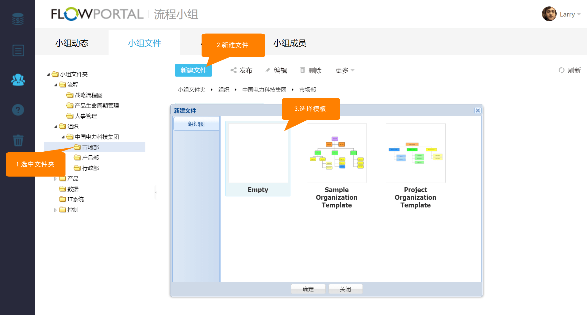
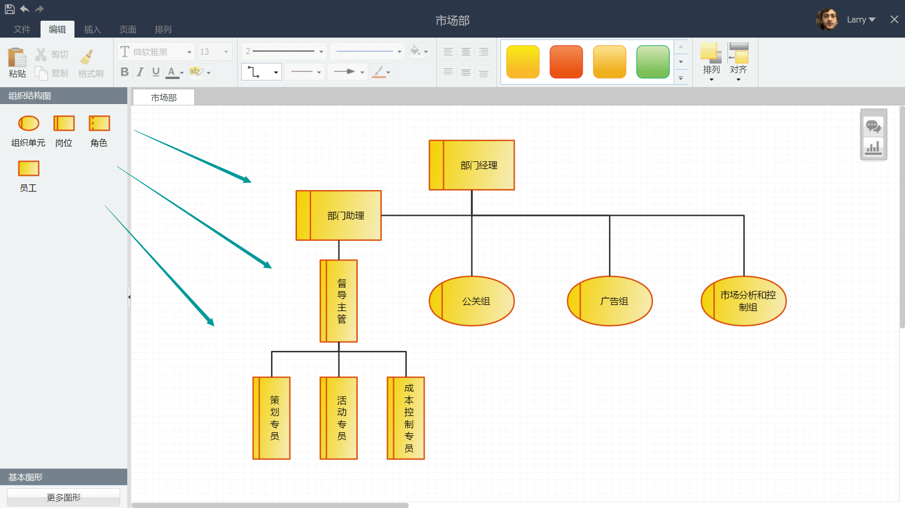
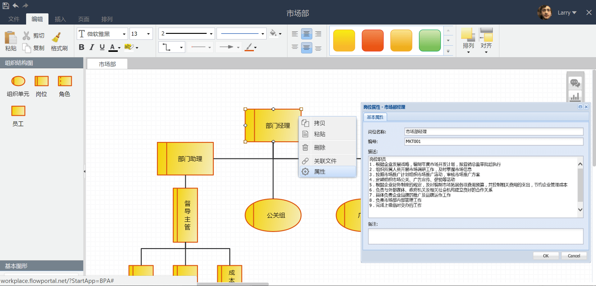

5.2 组织结构
绘制组织结构图
在左侧【组织】文件夹下，选中子部门【市场部】，点击【新建文件】按钮，选择【Empty】模板，进入组织结构梳理界面。

进入组织结构梳理界面后，通过拖拉左侧组织结构图，绘制组织结构。

设置元素属性
选中部门经理，点击鼠标右键，选择属性，在弹出的【岗位属性-部门经理】窗口，根据文字提示完成对部门经理的岗位属性设置。

Created with the Personal Edition of HelpNDoc: Generate EPub eBooks with ease